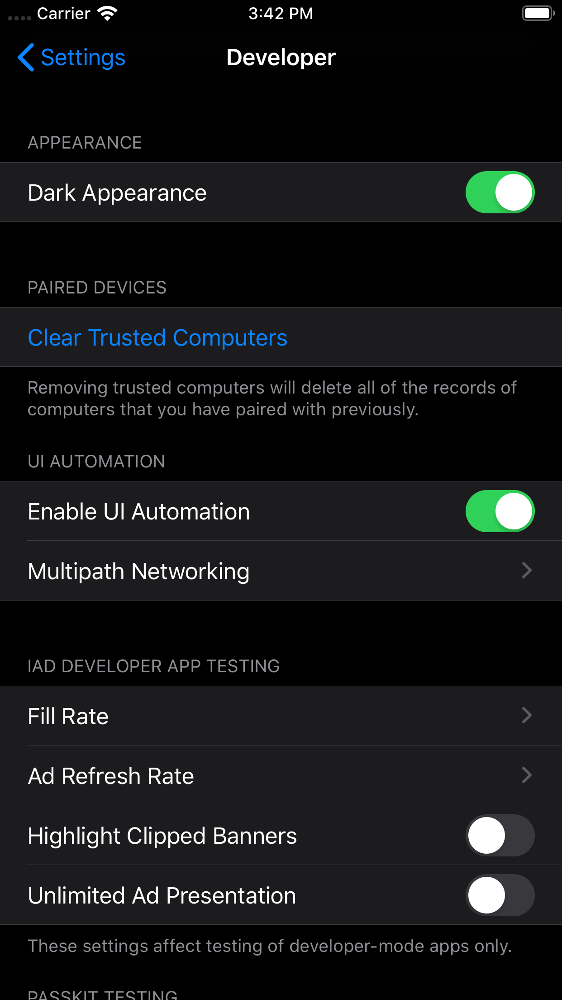

模拟器调试暗黑模式
打开模拟器-设置-开发者： 打开选项，即可开启暗黑模式
app禁止暗黑模式
在info.plist中，增加一行key为User Interface Style value为Light，这样你的app就不会跟随手机设置的模式而改变了1 2 <key>UIUserInterfaceStyle</key> <string>Light</string>
ios13下模态跳转presentViewController
在ios13下，苹果将 presentViewController默认的style改成了 UIModalPresentationAutomatic之前的是 UIModalPresentationFullScreen ，所以需要加一行代码，手动去选择vc.modalPresentationStyle = UIModalPresentationFullScreen;
ios13下获取状态栏的高度
之前在APPDelegate下无法获取到，需要在界面加载完成的viewDidLoad后，才会获取到，这样处理，可以解决
1 2 3 4 5 6 7 8 - (void )viewDidLoad { [[UIApplication sharedApplication] statusBarFrame].size.height； [super viewDidLoad]; }
获取searchBar中的TextField方法更改，会引起崩溃
1 2 3 4 5 UITextField * searchField = [searchBar valueForKey:@"_searchField" ]; UILabel *searchPlaceLabel = [searchField valueForKey:@"placeholderLabel" ]; searchPlaceLabel.textColor = [UIColor colorWithHex:@"#999999" ]; [searchField setValue:[UIFont boldSystemFontOfSize:14 ] forKeyPath:@"_placeholderLabel.font" ];
ios13之后把SearchBar中的textField直接暴露给开发者使用,无需在通过kvc获取。
1 2 3 4 5 6 7 8 9 UITextField * searchField = nil ; if (@available(iOS 13.0 , *)) { searchField =searchBar.searchTextField; }else { searchField = [searchBar valueForKey:@"_searchField" ]; } NSMutableAttributedString *arrStr = [[NSMutableAttributedString alloc] initWithString:searchField.placeholder attributes:@{NSFontAttributeName :[UIFont systemFontOfSize:14 ],NSForegroundColorAttributeName :[UIColor colorWithHex:@"#999999" ]}]; searchField.attributedPlaceholder = arrStr;
获取statusBar，方法更新如下，会引起崩溃
1 2 3 4 5 6 7 8 9 10 11 12 if (@available(iOS 13.0 , *)) { UIStatusBarManager *statusBarManager = [UIApplication sharedApplication].keyWindow.windowScene.statusBarManager; if ([statusBarManager respondsToSelector:@selector (createLocalStatusBar)]) { UIView *_localStatusBar = [statusBarManager performSelector:@selector (createLocalStatusBar)]; if ([_localStatusBar respondsToSelector:@selector (statusBar)]) { _statusBar = [_localStatusBar performSelector:@selector (statusBar)]; } } } else { _statusBar = [[[UIApplication sharedApplication] valueForKey:@"statusBarWindow" ] valueForKey:@"statusBar" ]; }
iOS13设置 UITabBarItem的选中颜色无效
1 2 3 4 5 if (@available(iOS 10.0 , *)) {self .tabBar.unselectedItemTintColor = [UIColor blackColor];} else { }